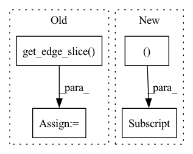

Pattern ID :39713

Before Change
for end_node_id in node.neighbors:
end_node = self._create_node(node_features, adjacency_matrix, end_node_id)
edge = self._create_edge(node, end_node)
edge_slice = edge.get_edge_slice()
message = self._get_message_inputs(messages, node, edge, node_features, adjacency_matrix)
message.compose()
new_messages[edge_slice] = message.value
return new_messages
After Change
edge = self._create_edge(node, end_node)
message = self._get_message_inputs(messages, node, edge, node_features, adjacency_matrix)
message.compose()
new_messages[node_id, end_node_id], new_messages[end_node_id, node_id] = message.value, message.value
return new_messages
def _get_message_inputs(self,
In pattern: SUPERPATTERN
Frequency: 3
Non-data size: 4
Instances
Fragment ID: 113152697
Project Name: kovanostra/message-passing-neural-network
Commit Name: cc580e07118cebe7ff5d602ff6d39378760d0ef3
Time: 2020-05-02
Author: kovanostra@gmail.com
File Name: message_passing_nn/model/graph_encoder.py
M Class Name: GraphEncoder
N Class Name: GraphEncoder
M Method Name: _compose_messages_from_nodes_to_targets(4)
N Method Name: _compose_messages_from_nodes_to_targets(4)
M Parent Class: nn.Module
N Parent Class: nn.Module
M File Name: message_passing_nn/model/graph_encoder.py
N File Name: message_passing_nn/model/graph_encoder.py
M Start Line: 115
M End Line: 124
N Start Line: 115
N End Line: 124
'>
Before Change
for reset_node_index in neighbors_slice:
reset_node = self._create_node(node_features, adjacency_matrix, reset_node_index)
reset_edge = self._create_edge(node, reset_node)
reset_edge_slice = reset_edge.get_edge_slice()
reset_gate_output = self._pass_through_reset_gate(messages, node, reset_edge, node_features)
messages_from_the_other_neighbors += to.mul(reset_gate_output, messages[reset_edge_slice])
return self.u_gru_current_memory_message[edge_slice].matmul(messages_from_the_other_neighbors)
After Change
return self.u_gru_current_memory_message[edge_slice].matmul(sum([to.mul(to.sigmoid(
to.add(
to.add(self.w_gru_update_gate_features[edge_slice].matmul(node_features[node.node_id]),
self.u_gru_update_gate[edge_slice].matmul(messages[node.node_id, reset_node_index])),
self.b_gru_update_gate)).long(), messages[node.node_id, reset_node_index])
for reset_node_index in neighbors_slice]))
'>
Fragment ID: 113152694
Project Name: kovanostra/message-passing-neural-network
Commit Name: 46b48a64ed3b792489f1ffde06ae212a7af5471a
Time: 2020-05-02
Author: kovanostra@gmail.com
File Name: message_passing_nn/model/graph_encoder.py
M Class Name: GraphEncoder
N Class Name: GraphEncoder
M Method Name: _keep_or_reset_messages(5)
N Method Name: _keep_or_reset_messages(6)
M Parent Class: nn.Module
N Parent Class: nn.Module
M File Name: message_passing_nn/model/graph_encoder.py
N File Name: message_passing_nn/model/graph_encoder.py
M Start Line: 198
M End Line: 208
N Start Line: 203
N End Line: 210
'>
Before Change
node: Node,
edge: Edge,
node_features: to.Tensor) -> to.Tensor:
edge_slice = edge.get_edge_slice()
message_from_a_neighbor_other_than_target = messages[edge_slice]
return to.sigmoid(
to.add(
to.add(self.w_gru_update_gate_features[edge_slice].matmul(node_features[node.node_id]),
After Change
node: Node,
end_node_id: int,
node_features: to.Tensor) -> to.Tensor:
message_from_a_neighbor_other_than_target = messages[node.node_id, end_node_id]
return to.sigmoid(
to.add(
to.add(self.w_gru_update_gate_features[node.node_id, end_node_id].matmul(node_features[node.node_id]),
self.u_gru_update_gate[node.node_id, end_node_id].matmul(message_from_a_neighbor_other_than_target)),
'>
Fragment ID: 113152691
Project Name: kovanostra/message-passing-neural-network
Commit Name: 289c7e129f2bea65a5bbcbfea31b86461dd9d9a9
Time: 2020-05-02
Author: kovanostra@gmail.com
File Name: message_passing_nn/model/graph_encoder.py
M Class Name: GraphEncoder
N Class Name: GraphEncoder
M Method Name: _pass_through_reset_gate(5)
N Method Name: _pass_through_reset_gate(5)
M Parent Class: nn.Module
N Parent Class: nn.Module
M File Name: message_passing_nn/model/graph_encoder.py
N File Name: message_passing_nn/model/graph_encoder.py
M Start Line: 217
M End Line: 222
N Start Line: 209
N End Line: 213